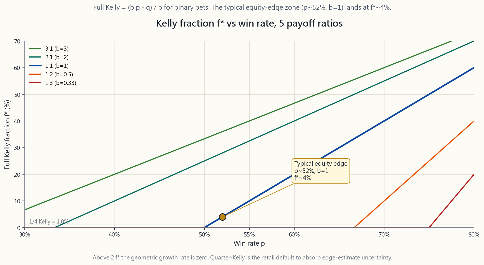
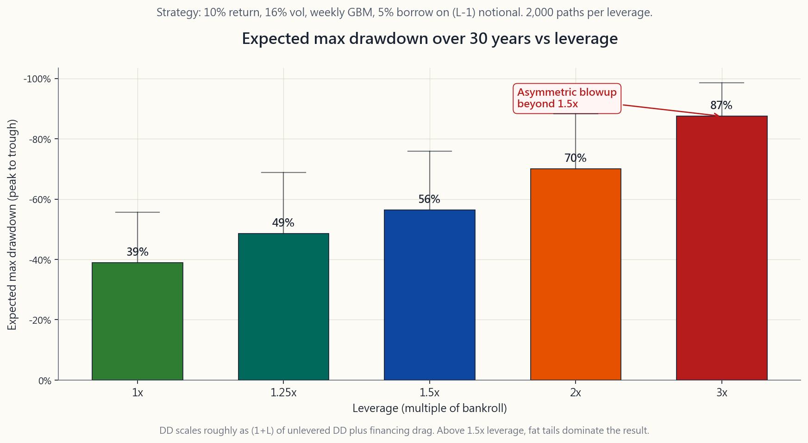

Week 41: Risk Management — Position Sizing, Stop Losses, Kelly, and Bankroll Preservation
1. Why This Is Important
Every retail loss-blowup story you have ever read shares the same shape. The investor was usually right about direction and wildly wrong about size. The Reddit screenshot showing "$50k lost on weekly SPY puts" is rarely a story of a bad thesis; it is almost always a story of a fine thesis sized at four times the bankroll the investor could survive. Position sizing is the most under- rated discipline in all of investing. It is what separates people who compound for thirty years from people who blow up in three.
You need this material for four reasons.
the market trend up. You cannot force your edge to be real. But you absolutely choose, before you click, what fraction of your capital is in this trade. That single decision dominates long-run wealth more than any view, any pick, any timing.
requires a +100% recovery. A -75% drawdown requires +300%. A -90% drawdown requires +900%. Sizing dictates how deep your worst drawdown goes; recovery cost grows non-linearly. Staying solvent longer than the market stays irrational — is impossible without sizing.
criterion gives you the geometric-growth-maximising bet size if your edge estimate is correct. In equities, your edge estimate is never correct to the third decimal. Fractional Kelly — a quarter or even an eighth of full Kelly — is the honest answer to that uncertainty.
times leverage doubles your return and your variance. But for max drawdown, the relationship is closer to multiplicative: a -25% drawdown at 1x becomes roughly -50% at 2x. Three times leverage on a 16% vol equity book turns a survivable bear market into a margin-call event. The blowup is non-linear.
This lesson works through Kelly, fractional Kelly, the 1-2% per- trade rule, stop losses versus hedges, correlation-adjusted sizing for multi-position books, and the leverage-versus-drawdown math. It then ties the whole thing back to the lessons that volatility is fat-tailed and that solvency beats being right.
2. What You Need to Know
2.1 The Kelly Criterion — Geometric-Growth-Optimal Bet Size
John Kelly (Bell Labs, 1956) asked a simple question: if I have a repeated bet with edge, what fraction of my bankroll should I risk each time to maximise the long-run geometric growth rate of my wealth? The answer for a binary win/lose payoff is:
$$ f^* = \frac{b p - q}{b} $$
where:
- $p$ = probability of winning,
- $q = 1 - p$ = probability of losing,
- $b$ = net odds received on a win (so a 1:1 bet has $b = 1$, a
Plug in a coin-flip with 55% heads and 1:1 odds: $f^* = (1 \cdot 0.55 - 0.45) / 1 = 0.10$. Kelly says bet ten percent of your bankroll on each flip. Above ten percent, the geometric growth rate falls. Above twenty percent — twice Kelly — your expected long-run growth becomes zero. Above $f = 2 f^*$ you are mathematically guaranteed to ruin yourself given enough trials, even with a positive edge.
For equity strategies, the win rate is rarely above 55% and the average win-to-loss ratio is rarely above 1.5. A typical setup might be $p = 0.52$, $b = 1$, giving $f^* = 0.04$ — about four percent of bankroll per trade. That is the universe you are operating in. You are not in a 1956 horse-race. You are in a near-fair-coin world where Kelly outputs single-digit percentages.
![Line chart of full-Kelly fraction f* on the y-axis (0 to ~30%) against win-rate p on the x-axis (40% to 70%), with five curves for different reward-to-risk ratios (b = 0.5, 1, 1.5, 2, 3). The central b=1 (coin-flip) line crosses zero at p=0.5 and reaches ~4% at the typical equity edge point of p≈0.52. Higher payoff ratios shift the curves up and left; below the no-edge boundary p < q/b each curve goes negative — the math politely telling you not to take the bet. The chart anchors the entire fractional-Kelly discussion: realistic equity edges produce single-digit-percent Kelly outputs, and quarter-Kelly is the responsible default.](image/week41_kelly_curve.png)
The chart shows full-Kelly $f^*$ as a function of win rate $p$ across five payoff ratios. Notice three things. First, at the typical equity-edge point ($p \approx 0.52$, $b = 1$) full Kelly is around four percent. Second, the curve is steeper than people expect — moving win rate from 50% to 55% triples Kelly. Third, when $p < q / b$ (the no-edge boundary) Kelly goes negative, which is the maths politely telling you not to take the bet.
2.2 Fractional Kelly — The Honest Answer to Edge Uncertainty
Full Kelly assumes you know your edge. In practice you are estimating $p$ and $b$ from a finite track record, and the standard error of that estimate is large. Edward Thorp, the mathematician who beat Vegas blackjack and ran a hedge fund for two decades, settled on half-Kelly for everything he did. The general formula for $k$-fractional Kelly:
$$ f_k = k \cdot f^* $$
with $k$ commonly chosen as $0.5$ (half-Kelly), $0.25$ (quarter- Kelly), or $0.125$ (eighth-Kelly). Two facts make fractional Kelly the default rather than full Kelly.
First, the geometric-growth penalty for under-betting is mild. At half-Kelly you capture roughly 75% of the optimum growth rate. At quarter-Kelly you still capture about 44%. The penalty for over-betting, however, is severe and asymmetric: at twice Kelly you grow at zero, and beyond that you lose money in expectation. So shading toward smaller-than-optimal is cheap insurance.
Second, the variance reduction is enormous. Half-Kelly cuts your drawdowns roughly in half compared to full Kelly. Quarter- Kelly cuts them again. For a strategy with a 30% annualised volatility, full Kelly produces drawdowns that can hit 80%; quarter-Kelly keeps them under 25%. Staying solvent longer than the market stays irrational is the entire reason quarter-Kelly is the industry standard for stock strategies.
The honest rule for retail: when you have a directional view on an individual stock, size at quarter-Kelly or smaller. When you have an index-level view, the same rule applies. Full Kelly is for blackjack tables where you literally counted the deck. It is not for your tax-deferred account.
2.3 The 1-2% Per-Trade Loss Rule
Professional traders rarely think in Kelly terms day to day. They think in a much simpler frame: *what is the maximum dollar loss I am willing to take on this single position?* The canonical rule is one to two percent of total bankroll.
Mechanics: if your bankroll is \$100,000 and your max loss per trade is 1%, you are willing to lose \$1,000 on this trade. If your stop is \$5 below entry on a \$100 stock, your position size is $1{,}000 / 5 = 200$ shares — \$20,000 of stock. If your stop is \$2 below entry, your position size is $1{,}000 / 2 = 500$ shares — \$50,000. The dollar-at-risk drives the share count, not the share count driving the dollar-at-risk.
Why the 1-2% range works:
- At 2% per loss, twenty consecutive losses produce roughly a
- At 5% per loss, twenty consecutive losses produce a $1 -
- At 10% per loss, twenty consecutive losses leave you with
The 1-2% rule does not assume you are a great trader. It assumes you are an average trader who will, sooner or later, encounter a losing streak. Sized at 2%, you survive that streak. Sized at 10%, you do not.
2.4 Stop Losses versus Hedges — Two Different Tools
A stop loss is an exit. You decide, before entering the trade, the price at which you will close the position and accept the loss. The trade is then over — no more upside, no more downside. Mechanically: a stop-loss order at the broker, or a mental stop you actually honour.
A hedge is a capped-loss overlay that *keeps the position open*. Long 100 SPY at \$520 with a \$500 protective put: your maximum loss is capped at \$20 per share plus the premium, and you keep all the upside above \$520 minus the premium. The position is alive; only the tail is amputated.
Three rules for choosing between them:
key earnings number, an FDA decision, or a Fed meeting could invalidate your thesis, stop loss the position when the news prints. There is no point holding a thesis that has been refuted.
volatile.** If you think NVDA is fairly valued for a 12-month horizon but you cannot stomach a -30% interim drawdown, collar it (long stock + short OTM call + long OTM put). You keep the multi-year thesis alive while bounding the path- level pain.
you do not need either.** This is the most under-used option. A 1% position needs no stop and no hedge. A 25% position needs both. Position sizing is the cheapest insurance you have ever bought.
Stops have a known failure mode: gap risk. If overnight news opens the stock 20% below your stop, you fill at the open, not at the stop. Hedges with options do not have that failure mode because the put has already been bought.
2.5 Correlation-Adjusted Sizing for Multi-Position Books
The 1-2% rule per trade assumes trades are independent. They are not. If you are long ten tech stocks and the Nasdaq sells off 5%, all ten move together. Your effective single-trade exposure is much higher than the per-trade rule suggests.
The fix is to think in terms of **correlated dollar-risk buckets** rather than individual trades. A simple framework:
- All stocks in the same sector count as one bucket. Cap that
- All positions correlated to a single macro factor (rates,
- Apply the 1-2% rule within each bucket, after the bucket
Concretely: if you want to be long six semiconductors, do not size each at 2%. Size the aggregate tech-sector at 8%, then divide that across the six names — about 1.3% each. When the sector rotates against you, your loss is bucket-capped, not position-summed.
The institutional version of this is risk parity: weight positions inverse to their volatility, then apply a covariance overlay to scale down correlated bets. Retail does not need the matrix algebra; the bucket rule captures 80% of the benefit.
2.6 Leverage and Drawdown — The Asymmetric Blowup
Leverage scales both return and variance, but its effect on drawdowns is non-linear and asymmetric. The intuition:
$$ \text{DD}_{\text{lev}} \approx (1 + L) \cdot \text{DD}_{\text{unlev}} \quad \text{(plus financing drag)} $$
A diversified equity book with a -25% peak-to-trough drawdown at 1x becomes roughly -50% at 2x leverage and -75% at 3x. Add the borrow cost (currently \~5% annual at retail margin rates) and the realised drawdown is even worse, because the drag eats into your equity during the drawdown, when you can least afford it.
![Curve of expected maximum drawdown over a 30-year horizon (y-axis, deepening downward to ~-90%) plotted against leverage L (x-axis, 1.0 to 3.0) for a strategy with 10% expected return and 16% annualised volatility, with retail margin financing drag included. The shape is dramatic: from L=1.0 to 1.5 the curve climbs roughly linearly to about -35%; from 1.5 to 2.0 it bends upward and reaches roughly -55%; beyond 2.0 it goes vertical, hitting around -85% at 3x leverage. The chart visualises why leverage above 1.5x is](image/week41_leverage_drawdown.png)
The chart simulates expected max drawdown over a 30-year horizon for a strategy with 10% expected return and 16% annualised volatility, across leverage levels from 1.0 to 3.0. Notice the shape. From 1.0 to 1.5 the curve climbs roughly linearly. From 1.5 to 2.0 it bends upward. Beyond 2.0 it goes vertical: at 3x, the expected worst drawdown over thirty years is around -85%, which is a polite way of saying *margin call, position liquidated at the worst possible moment, account closed*.
The lesson: leverage above 1.5x is a different sport. You can do it, but you must size the underlying position much smaller to keep the levered drawdown survivable. That defeats the point of the leverage. Fat-tailed volatility is operating at full strength here: volatility is normally distributed in textbooks, fat-tailed in real life, and leverage makes the fat tail unsurvivable.
2.7 The Bankroll Preservation Mindset
Everything in this lesson sits on top of a single mental model: your bankroll is the asset. Trades are merely instruments through which the bankroll grows or shrinks. The job is not to "win the trade." The job is to keep playing — to remain solvent through any sequence of outcomes the market can produce, so the long-run edge has time to compound.
This is what it means when we say *the market can stay irrational longer than you can stay solvent*. The investor who blows up in 2022 is not the one who was wrong about the Fed. The investor who blows up in 2022 is the one who was right about the Fed but sized the bet at full Kelly, took 3x leverage, and did not put a hedge on. The thesis worked. The sizing did not.
The bankroll preservation rules, in priority order:
or factor.
underlying strategy is itself volatile (options, crypto, single names).
years of out-of-sample performance proving your edge estimate.
and price the option that would prevent it.
These five rules will not make you rich. Skill, time, and a working edge will. But these rules will *let you stay in the game long enough* for the skill, time, and edge to do their work. That is the entire point.
3. Common Misconceptions
geometric in reality. Above $2 f^*$ you grow at zero. Above $3 f^*$ you lose money even with positive edge.
know your edge. Half-Kelly captures 75% of the growth and cuts drawdowns in half. Quarter-Kelly is the retail default.
control the size of the loss. The alternative is letting the market decide.
hedging is the cheapest line item on your statement. The right comparison is hedge cost vs probability-weighted blowup cost, not hedge cost vs zero.
variance and roughly doubles your drawdowns. The expected geometric return is $L \mu - 0.5 L^2 \sigma^2$ — not linear in $L$.
daily exposure. Over time, vol decay subtracts roughly $0.5 (L^2 - L) \sigma^2$ per year. See Week 37.
sector correlate at 0.6-0.9 in normal times and at 0.95+ in crashes. Correlations rise to one in the moments you most need diversification.
trade is losing money, which is the only time they matter. Use the broker's stop or do not use one.
keeps the winners winning. The hedge funds that have been open for thirty years are the ones with risk officers who say no.
inverse of the right rule. Add risk after *bankroll has grown, never after streak has happened*. The two are different signals.
4. Q&A Section
**Q1: I have $50,000 and want to risk 1% per trade. The stock is \$80 with a stop at \$76. How many shares?** Risk per trade = \$500. Loss per share at stop = \$4. Position = $500 / 4 = 125$ shares = \$10,000 notional (20% of bankroll). The position is 20% of the account but the risk is 1%. That is the distinction sizing makes.
Q2: Why quarter-Kelly and not half-Kelly? Half-Kelly assumes your edge estimate has modest error. For discretionary equity trades the edge estimate has large error (you are guessing 52%-54% win rates from small samples). Quarter- Kelly bakes that uncertainty in. If you have a true mechanical strategy with thousands of trades and stable parameters, half-Kelly is defensible.
Q3: Should I use a trailing stop or a fixed stop? Fixed stops are cleaner for short-term trades — you defined the thesis, you defined the invalidation, you exit at invalidation. Trailing stops are better for trend-following positions where you want to let winners run but lock in gains as the position moves your way. They have a known failure mode: noise stops you out before the trend resumes.
Q4: Is selling cash-secured puts a "hedge"? No. Selling a put is a short volatility income trade with defined upside (the premium) and large defined downside (strike minus premium). It is not a hedge — it adds risk. Buying a put is a hedge.
Q5: How do I size options trades? Options sizing should be based on maximum loss, not notional. A long call has max loss = premium. Size the premium at 1-2% of bankroll. A short put has max loss = strike minus premium. Size that at 1-2% of bankroll, which is much smaller than 1-2% of premium received.
Q6: My friend doubled his account on TSLA. Should I size up? No. He took an unsized bet and got lucky on a single draw. The correct comparison is over a thousand draws, where the unsized strategy goes to zero with probability one. Use his result as a survivorship-bias data point, not a sizing prescription.
**Q7: What's a reasonable max leverage for a buy-and-hold investor?** 1.0x in tax-deferred accounts; 1.0x to 1.25x in taxable margin accounts using box-spread financing; 1.5x only with a written drawdown plan and an explicit liquidity reserve. Above 1.5x is leveraged trading, not buy-and-hold investing.
Q8: How do I know if I'm over-sizing? The sleep test. If a -3% day on the position would change your mood for the evening, you are over-sized. The position should be small enough that the worst plausible day is annoying, not distressing.
**Q9: What about Kelly when I have multiple simultaneous positions?** For independent positions, sum of $f^*$ values across positions. For correlated positions, sum of $f^*$ divided by an effective- correlation factor. The bucket rule from §2.5 is the practical shortcut.
Q10: Does the 1-2% rule apply to long-term index investing? No — it applies to active trades with explicit invalidation points. A 100% index allocation in your retirement account is not "violating the rule"; it is a different category of capital with a different time horizon. The rule applies to your trading sleeve, not your buy-and-hold sleeve. The barbell keeps these two sleeves separate by design.
Q11: How does this connect to the four-tranche framework? Each tranche has its own sizing rule. Growth: index-tracking, no per-trade rule. Income: position size = yield target / asset yield. Stores of value: fixed allocation, rebalanced. Opt: this is where Kelly, fractional Kelly, and the 1-2% rule live. Risk management discipline is loudest in the Opt tranche because that is where unsized blowups happen.
Q12: Can I use Kelly for crypto? You can compute it. The problem is your $p$ and $b$ estimates are far less reliable than for equities, and crypto's drawdown distribution has a fatter left tail than the normal model underlying Kelly. Use eighth-Kelly or smaller, and treat all sizing as provisional until you have a multi-cycle track record.
第四十一週：風險管理 — 倉位大小、止蝕、凱利公式與本金保存
1. 為何此課題至關重要
你讀過的每一個散戶爆倉故事，形狀都一樣。投資者通常對方向判斷正確，卻在規模上嚴重失誤。那張Reddit截圖顯示「每週SPY認沽期權虧損5萬美元」，鮮少是因為論點出錯；幾乎永遠是一個尚算合理的論點，用了本金四倍的倉位。倉位大小是投資界最被低估的紀律。它正是令人複利三十年與三年內爆倉的分水嶺。
你需要掌握此課題，原因有四。
本課將逐一講解凱利公式、分數凱利、每筆交易1-2%規則、止蝕與對沖的取捨、多倉位組合的相關性調整規模，以及槓桿與回撤的數學。最後，本課將把所有內容與此前所學聯繫起來——波動性具有肥尾特徵，以及償付能力比「正確」更重要。
2. 你需要掌握的知識
2.1 凱利準則 — 最優幾何增長下注規模
約翰·凱利（貝爾實驗室，1956年）提出了一個簡單問題：如果我有一個帶有優勢的重複下注，每次應把多少比例的本金投入，才能最大化長期的幾何財富增長率？對於二元勝負結果，答案是：
$$ f^* = \frac{b p - q}{b} $$
其中：
- $p$ = 勝出概率，
- $q = 1 - p$ = 落敗概率，
- $b$ = 勝出時的淨賠率（1:1賠率則 $b = 1$，2:1賠率則 $b = 2$）。
對於股票策略，勝率鮮少超過55%，平均盈虧比鮮少超過1.5。典型設置或許是 $p = 0.52$，$b = 1$，得出 $f^* = 0.04$——約為本金的4%。這才是你所處的現實世界。你不是在1956年的賽馬場；你身處一個近乎公平硬幣的世界，而凱利公式的輸出是個位數百分比。

此圖呈現五種賠率下，完整凱利 $f^*$ 隨勝率 $p$ 的變化。留意三點。第一，在典型股票優勢點（$p \approx 0.52$，$b = 1$），完整凱利約為4%。第二，曲線比人們預期的更陡——將勝率從50%提高到55%，凱利值增加近三倍。第三，當 $p < q / b$（無優勢邊界），凱利值變為負數——這是數學在委婉告訴你不應進行這筆交易。
2.2 分數凱利 — 面對優勢不確定性的誠實答案
完整凱利假設你知道自己的優勢。實際上，你是從有限的記錄中估算 $p$ 和 $b$，而該估算的標準誤差相當大。數學家愛德華·索普憑藉計牌打敗拉斯維加斯，並管理對沖基金長達二十年，他對自己所做的一切都採用半凱利。$k$ 分數凱利的通用公式為：
$$ f_k = k \cdot f^* $$
$k$ 通常選擇 $0.5$（半凱利）、$0.25$（四分之一凱利）或 $0.125$（八分之一凱利）。有兩個事實使分數凱利成為預設選擇，而非完整凱利。
第一，低估下注的幾何增長懲罰輕微。半凱利約能捕捉最優增長率的75%；四分之一凱利仍能捕捉約44%。然而，高估下注的懲罰卻嚴酷且不對稱：兩倍凱利增長為零，超過此水平在預期中虧損。因此，偏向低於最優的倉位是廉價保險。
第二，波動性降幅極為顯著。與完整凱利相比，半凱利的回撤大約減半；四分之一凱利再度減半。對於年化波動性30%的策略，完整凱利的回撤可達80%；四分之一凱利將其控制在25%以下。在市場維持非理性的時間內保持償付能力，正是四分之一凱利成為股票策略業界標準的全部原因。
散戶的誠實規則：對個股有方向性觀點時，採用四分之一凱利或更小的規模。對指數有觀點時，同樣原則適用。完整凱利是用於數過牌的21點賭桌，並非你的稅務遞延賬戶。
2.3 每筆交易虧損1-2%規則
專業交易員在日常操作中很少以凱利術語思考，他們採用更簡單的框架：這筆倉位我願意承受的最大美元虧損是多少？ 公認的規則是本金的1%至2%。
具體操作：若你的本金是10萬美元，每筆交易的最大虧損為1%，即願意在這筆交易中虧損1,000美元。若止蝕位在100美元股票的買入價以下5美元，則倉位規模為 $1{,}000 / 5 = 200$ 股，即2萬美元的名義價值。若止蝕位低於買入價2美元，則倉位規模為 $1{,}000 / 2 = 500$ 股，即5萬美元。驅動股份數量的是美元風險敞口，而非反過來由股份數量決定美元風險敞口。
1-2%範圍的合理性：
- 每次虧損2%，連續二十次虧損產生約 $1 - 0.98^{20} \approx 33\%$ 的回撤，尚可承受。
- 每次虧損5%，連續二十次虧損產生約 $1 - 0.95^{20} \approx 64\%$ 的回撤，足以終結投資生涯。
- 每次虧損10%，連續二十次虧損後剩餘約 $0.9^{20} \approx 12\%$ 的起始資本，遊戲結束。
2.4 止蝕與對沖 — 兩種不同的工具
止蝕是一個退出機制。在建倉之前，你決定一個價格，一旦觸及便平倉接受虧損。交易就此結束——無後續升幅，亦無後續跌幅。具體操作：在經紀處設置止蝕盤，或設定一個你確實會遵守的心理止蝕位。
對沖是一個保留倉位的有限虧損覆蓋工具。以520美元買入100股SPY，配合500美元的保護性認沽期權：最大虧損上限為每股20美元加上期權金，同時保留520美元以上（扣除期權金後）的所有升幅。倉位依然存在，只是尾部風險被截去。
三個選擇準則：
止蝕有一個已知的失效情形：跳空風險。若隔夜消息令股票以低於止蝕位20%開盤，你將在開盤價成交，而非止蝕價。以期權進行的對沖則不存在此問題，因為認沽期權已在賬戶中。
2.5 多倉位組合的相關性調整規模
每筆交易1-2%規則假設各交易是獨立的。實際上並非如此。若你持有十隻科技股，納斯達克下跌5%時，十隻股票將同步下跌。你的有效單筆交易風險敞口遠高於每筆交易規則所示。
解決方法是以相關性美元風險桶而非個別交易來思考。一個簡單框架：
- 同一板塊的所有股票視為一個桶，該桶的總風險敞口上限為6-10%。
- 與同一宏觀因素（利率、美元、油價）高度相關的所有倉位視為一個桶，同樣上限。
- 在桶上限之後，在桶內應用1-2%規則。
2.6 槓桿與回撤 — 不對稱的爆倉
槓桿既放大回報，也放大波動性，但其對回撤的影響是非線性且不對稱的。直覺上：
$$ \text{回撤}_{\text{槓桿}} \approx (1 + L) \cdot \text{回撤}_{\text{無槓桿}} \quad \text{（加上融資成本拖累）} $$
一個分散投資的股票組合，在1倍下的峰值至谷底回撤為-25%，在2倍槓桿下約為-50%，3倍槓桿下約為-75%。再加上借貸成本——散戶保證金利率目前約為5%的年化——而且這個成本會在回撤期間侵蝕你的資本，偏偏是你最承受不起的時候。

此圖模擬預期回報10%、年化波動性16%的策略，在1.0至3.0倍槓桿下的30年期預期最大回撤。留意其形狀。從1.0至1.5倍，曲線近似線性上升——尚可控制。從1.5至2.0倍，曲線向上彎曲。超過2.0倍後，曲線幾乎垂直：在3倍槓桿下，三十年內預期最大回撤約為-85%，委婉地說就是追繳保證金、在最壞時機被強制平倉、賬戶被關閉。
教訓：1.5倍以上的槓桿是另一種運動。你可以使用，但必須大幅縮小基礎倉位規模，才能使加槓桿後的回撤保持可承受。這反而抵消了槓桿的意義。肥尾波動性在此全力發揮：波動性在教科書中呈正態分佈，在現實中卻呈肥尾分佈，而槓桿使肥尾變成無法生存的尾部風險。
2.7 本金保存的思維模式
本課所有內容建立在一個單一的心智模型之上：你的本金才是資產。交易只是本金增減的工具。你的工作不是「贏得這筆交易」，而是持續參與——在市場可能產生的任何結果序列中保持償付能力，讓長期優勢有足夠時間複利增長。
這正是「市場維持非理性的時間可以長過你保持償付能力的時間」這句話的含義。在2022年爆倉的投資者，不是那個對聯儲局判斷失誤的人。爆倉的是這樣的人：對聯儲局判斷正確，卻以完整凱利押注，加上3倍槓桿，又沒有設置對沖。論點是對的，倉位管理卻失敗了。
本金保存規則，按優先級排列：
這五條規則不會令你致富。技能、時間和真實的優勢才能。但這些規則會讓你在遊戲中停留足夠長的時間，讓技能、時間和優勢發揮作用。這才是全部的意義所在。
3. 常見誤解
4. 問答環節
問題1：我有50,000美元，想每筆交易冒1%的風險。股票報價80美元，止蝕位在76美元。應買多少股？ 每筆交易風險 = 500美元。觸及止蝕時每股虧損 = 4美元。倉位 = $500 / 4 = 125$ 股，名義價值10,000美元（佔本金20%）。倉位佔賬戶20%，但風險僅為1%。這就是倉位管理的意義所在。
問題2：為何是四分之一凱利而非半凱利？ 半凱利假設你的優勢估算誤差適中。對於自主裁量的股票交易，優勢估算誤差較大（你從小樣本猜測52%-54%的勝率）。四分之一凱利已將這種不確定性納入考量。若你擁有一個真正的系統性策略，並有數千次交易及穩定參數，半凱利是可以接受的。
問題3：應使用移動止蝕還是固定止蝕？ 固定止蝕更適合短線交易——你已界定論點，界定了使論點失效的條件，並在失效時退出。移動止蝕更適合趨勢跟蹤倉位，讓盈利的部分持續運行，同時隨倉位向有利方向移動來鎖定利潤。移動止蝕有一個已知的失效情形：噪音令你在趨勢恢復前過早被止出。
問題4：賣出現金擔保認沽期權算是「對沖」嗎？ 不算。賣出認沽期權是一個沽空波動性的收息交易，有確定的上限（期權金）和較大的下行風險（行使價減期權金）。這不是對沖——它增加了風險。買入認沽期權才是對沖。
問題5：如何確定期權交易的規模？ 期權倉位規模應以最大虧損為基礎，而非名義價值。認購期權的最大虧損等於期權金，將期權金規模設為本金的1-2%。認沽期權的最大虧損等於行使價減期權金，將此金額設為本金的1-2%——這遠小於所收期權金的1-2%。
問題6：我朋友做TSLA翻了一倍，我應該加大倉位嗎？ 不應。他進行了一筆未控制規模的押注，並在單次抽籤中走運。正確的比較是一千次抽籤後，沒有規模控制的策略以概率一趨向零。把他的結果視為倖存者偏差的數據點，而非倉位管理的參考。
問題7：買入持有投資者的合理最大槓桿是多少？ 稅務遞延賬戶為1.0倍；應稅保證金賬戶使用箱式價差融資時為1.0至1.25倍；只有在有書面回撤計劃及明確流動性儲備的情況下才用1.5倍。超過1.5倍屬於槓桿交易，而非買入持有投資。
問題8：如何判斷自己倉位過重？ 睡眠測試。若倉位單日下跌3%會影響你當晚的情緒，則倉位過重。倉位應小至最差的合理單日跌幅只令你感到煩惱，而非痛苦。
問題9：同時持有多個倉位時凱利公式如何應用？ 對於獨立倉位，將各倉位的 $f^$ 值相加。對於相關性較高的倉位，將 $f^$ 之和除以有效相關性因子。第2.5節的桶規則是實際操作的捷徑。
問題10：1-2%規則適用於長線指數投資嗎？ 不適用——它適用於有明確失效條件的主動交易。你退休賬戶中100%的指數配置並非「違反規則」；它屬於不同類別的資本，有不同的投資期限。此規則適用於你的交易部分，而非買入持有部分。槓鈴策略從設計上就將這兩部分分開。
問題11：這與四組別框架有何關聯？ 每個組別有其自身的規模規則。增長組別：追蹤指數，無每筆交易規則。收息組別：倉位規模 = 目標收益率÷資產收益率。價值儲存組別：固定配置，定期再平衡。選擇性組別（Opt）：凱利公式、分數凱利和1-2%規則在此適用。風險管理紀律在選擇性組別最為重要，因為未受控的爆倉就發生在這裡。
問題12：凱利公式可以用於加密貨幣嗎？ 可以計算。問題在於你的 $p$ 和 $b$ 估算遠不如股票可靠，而且加密貨幣回撤分佈的左尾比凱利公式所基於的正態模型更肥。使用八分之一凱利或更小，並將所有倉位規模視為暫定，直至你有跨越多個週期的追蹤記錄。
第四十一週：風險管理——部位規模控管、停損、凱利公式與資金保全
1. 為何這個主題至關重要
你讀過的每一個散戶爆倉故事，骨子裡都長得一模一樣。投資人對方向的判斷通常是對的，錯的是規模——而且錯得離譜。那張Reddit截圖上寫著「SPY週選擇權虧損五萬美元」，背後幾乎從來不是一個爛論點的故事，而是一個還不錯的論點、卻壓上了資金四倍以上部位的故事。部位規模控管是整個投資領域最被低估的紀律，它決定了誰能複利三十年、誰在三年內爆倉。
你需要掌握這個主題，原因有四。
這堂課將帶你走過凱利公式、分數凱利、每筆交易1-2%的法則、停損與避險的差異、多部位帳戶的相關性調整規模控管，以及槓桿與回撤的數學。最後，我們將把所有內容拉回到這個核心：波動性有肥尾，而償債能力比正確更重要。
2. 你需要知道的事
2.1 凱利公式——幾何成長最佳化的下注規模
約翰·凱利（Bell Labs，1956年）問了一個簡單的問題：如果我反覆下注且具有優勢，每次應該押多少比例的資金，才能最大化長期財富的幾何成長率？對於二元勝負的賭注，答案是：
$$ f^* = \frac{b p - q}{b} $$
其中：
- $p$ = 獲勝機率，
- $q = 1 - p$ = 輸掉的機率，
- $b$ = 獲勝時的淨賠率（1:1的賭注 $b = 1$，2:1的賭注 $b = 2$）。
對於股票策略，勝率鮮少超過55%，平均盈虧比也鮮少超過1.5。典型的設定可能是 $p = 0.52$、$b = 1$，得出 $f^* = 0.04$——大約每筆交易押資金的四%。這就是你所在的世界。你不在1956年的賽馬場，你在一個近乎公平翻硬幣的世界，凱利的輸出結果是個位數的百分比。
此圖顯示完整凱利 $f^*$ 在五種賠率比下作為勝率 $p$ 函數的結果。請注意三件事。第一，在典型股票優勢點（$p \approx 0.52$，$b = 1$），完整凱利約為四%。第二，曲線比人們預期的更陡——勝率從50%升至55%，凱利值增加約三倍。第三，當 $p < q / b$（無優勢邊界）時，凱利值為負，這是數學在禮貌地告訴你不要接受這筆賭注。
2.2 分數凱利——面對優勢不確定性的誠實答案
完整凱利假設你知道自己的優勢。實際上，你是從有限的歷史紀錄中估算 $p$ 和 $b$，而那個估算的標準誤差是很大的。愛德華·索普（Edward Thorp）是擊敗拉斯維加斯21點並經營避險基金長達二十年的數學家，他對所有操作都採用二分之一凱利。$k$ 分數凱利的通用公式為：
$$ f_k = k \cdot f^* $$
其中 $k$ 通常選擇 $0.5$（半凱利）、$0.25$（四分之一凱利）或 $0.125$（八分之一凱利）。有兩個原因讓分數凱利成為預設值，而非完整凱利。
第一，下注不足的幾何成長懲罰是溫和的。半凱利可以獲取約75%的最優成長率；四分之一凱利仍能獲取約44%。然而，過度下注的懲罰則是嚴重且不對稱的：在兩倍凱利時成長率為零，超過這個點就會虧損。因此偏向低於最優值是廉價的保險。
第二，變異數的降低幅度巨大。半凱利將回撤幅度大致減半；四分之一凱利再進一步削減。對於年化波動性30%的策略，完整凱利可能產生高達80%的回撤；四分之一凱利將其控制在25%以下。「撐得比市場的非理性更久」正是四分之一凱利成為股票策略業界標準的全部原因。
給散戶的誠實守則：當你對個股有方向性觀點時，以四分之一凱利或更小比例進行規模控管。對指數層面的觀點，同樣適用。完整凱利是為了算牌後的21點賭桌。它不適用於你的退休帳戶。
2.3 每筆交易1-2%的停損法則
專業交易人日常很少用凱利的思維框架，他們的框架要簡單得多：我願意在這個單一部位上損失的最大金額是多少？ 標準守則是總資金的一至二%。
操作方式：若你的資金是100,000美元，每筆交易的最大虧損是1%，你願意在這筆交易上損失1,000美元。若你在一檔100美元的股票上設停損於95美元，你的部位規模是 $1{,}000 / 5 = 200$ 股——20,000美元的名目部位。若停損設在98美元，部位規模是 $1{,}000 / 2 = 500$ 股——50,000美元。決定股數的是風險金額，而不是反過來。
為什麼1-2%的範圍有效：
- 每筆虧損2%，連續二十筆虧損產生約 $1 - 0.98^{20} \approx 33\%$ 的回撤。可以熬過去。
- 每筆虧損5%，連續二十筆虧損產生約 $1 - 0.95^{20} \approx 64\%$ 的回撤。職業生涯終結。
- 每筆虧損10%，連續二十筆虧損後剩下約 $0.9^{20} \approx 12\%$ 的初始資金。遊戲結束。
2.4 停損與避險——兩種不同的工具
停損是一種退出機制。你在進場前就決定好，當股價跌至哪個位置時，你將平倉並接受損失。交易就此結束——不再有上行空間，也不再有下行風險。執行方式：在券商設定停損單，或設定一個你確實會遵守的心理停損點。
避險是一種上限損失的保護覆蓋層，讓部位保持開倉。買進100股SPY於520美元，搭配500美元的保護性賣權：你的最大損失被限制在每股20美元加上權利金，同時你保留了520美元以上（扣除權利金）的所有上行空間。部位仍然存活，只是截斷了尾端風險。
選擇兩者的三條準則：
停損有一個已知的失敗模式：跳空風險。若隔夜消息讓股票在停損價以下跳空開盤，你以開盤價成交，而非停損價。用選擇權進行避險就沒有這個問題，因為賣權已買在你的帳戶裡了。
2.5 多部位帳戶的相關性調整規模控管
每筆交易1-2%的法則假設各筆交易彼此獨立。但它們並不獨立。若你同時做多十檔科技股，當那斯達克下跌5%，十檔全部一起動。你的實際單筆曝險遠高於每筆交易法則所暗示的水準。
解決方法是以相關性風險金額桶的思維取代個別交易。一個簡單框架：
- 同一類股的所有股票算作一個桶，將該桶的總風險金額上限設在6-10%。
- 與單一總體因子（利率、美元、油價）相關的所有部位算作一個桶，同樣上限。
- 在每個桶內部，再套用1-2%的每筆交易法則。
2.6 槓桿與回撤——不對稱的爆倉風險
槓桿同時放大報酬和變異數，但它對回撤的影響是非線性且不對稱的。直觀理解：
$$ \text{回撤}_{\text{槓桿}} \approx (1 + L) \cdot \text{回撤}_{\text{無槓桿}} \quad \text{（加上融資拖累）} $$
一個多元分散的股票帳戶，在無槓桿下的峰谷回撤為-25%，在2倍槓桿下大約變成-50%，在3倍槓桿下變成-75%。再加上借貸成本（目前散戶保證金利率約5%/年），而這筆拖累是在回撤期間侵蝕你的淨值的，偏偏那正是你最無法承受的時刻。
此圖模擬一個預期報酬10%、年化波動性16%的策略，在槓桿倍數1.0至3.0的範圍內，30年期間的預期最大回撤。請注意曲線形狀。從1.0到1.5，曲線大致線性爬升——尚在可控範圍。從1.5到2.0，曲線向上彎曲。超過2.0後，曲線幾乎垂直：在3倍槓桿下，三十年間的預期最差回撤約為-85%，這是一種委婉的說法，意思是追繳保證金、在最糟糕的時刻被強制平倉、帳戶關閉。
結論：1.5倍以上的槓桿是另一種運動。你可以用，但你必須將標的部位大幅縮減，才能讓槓桿後的回撤維持在可生存的範圍。這樣一來，槓桿的意義就消失了。肥尾波動性在這裡全力運作：波動性在教科書裡是常態分布，在現實中是肥尾分布，而槓桿讓肥尾變得無法生存。
2.7 資金保全的心態
這堂課的所有內容，都建立在一個核心心智模型之上：你的資金本身就是資產。交易只是資金透過其成長或縮減的工具。你的工作不是「贏得這筆交易」，而是持續留在場上——在市場可能製造的任何結果序列中保持償債能力，讓長期優勢有時間複利。
這就是「市場保持非理性的時間，可能比你保持償債能力的時間更長」這句話的意義。在2022年爆倉的投資人，不是那個對聯準會判斷錯誤的人。在2022年爆倉的投資人，是那個對聯準會判斷正確、卻以完整凱利規模下注、用了3倍槓桿、又沒有任何避險的人。論點是對的，規模不對。
資金保全守則，依優先順序排列：
這五條守則不會讓你致富。讓你致富的是技能、時間和真實的優勢。但這些守則會讓你在場上待得夠久，讓技能、時間和優勢發揮效用。這就是全部的意義。
3. 常見迷思
4. 問答單元
問1：我有50,000美元，想要每筆交易風險1%。股票現價80美元，停損設在76美元。我能買幾股？ 每筆交易風險金額 = 500美元。每股停損損失 = 4美元。部位規模 = $500 / 4 = 125$ 股 = 10,000美元名目部位（帳戶的20%）。部位是帳戶的20%，但風險是1%。這就是規模控管所帶來的區別。
問2：為什麼用四分之一凱利而不是半凱利？ 半凱利假設你對優勢的估算誤差是適中的。對於裁量型股票交易，優勢估算誤差往往很大（你是從小樣本中猜測52-54%的勝率）。四分之一凱利將這種不確定性內建進去了。若你有一個具有數千筆交易記錄且參數穩定的真正機械式策略，半凱利是可以辯護的。
問3：我應該用移動停損還是固定停損？ 固定停損對短線交易更清晰——你定義了論點，定義了論點失效的條件，在失效時退場。移動停損對趨勢跟隨部位更好，你希望讓獲利部位繼續奔跑，同時隨著部位向有利方向移動來鎖定獲利。它有一個已知的失敗模式：雜訊把你停損出場，然後趨勢繼續。
問4：賣出現金擔保賣權算是「避險」嗎？ 不算。賣出賣權是一種放空波動性的收益型交易，有有限的上行空間（權利金）和較大的有限下行空間（履約價減去權利金）。它不是避險——它增加了風險。買進賣權才是避險。
問5：選擇權交易應如何控管規模？ 選擇權的規模控管應基於最大損失，而非名目金額。買入買權的最大損失 = 權利金，將權利金控制在資金的1-2%。賣出賣權的最大損失 = 履約價減去權利金，將那個金額控制在資金的1-2%——這遠小於已收取權利金的1-2%。
問6：我朋友靠TSLA讓帳戶翻倍，我應該加大規模嗎？ 不應該。他下了一個未經規模控管的賭注，然後在單次抽籤中得到好結果。正確的比較應是一千次抽籤之後，未經規模控管的策略以機率一趨向歸零。把他的結果當作一個倖存者偏差的數據點，而不是一個規模控管的處方。
問7：一個買進持有的投資人，合理的最大槓桿是多少？ 免稅延緩帳戶維持1.0倍；應稅保證金帳戶使用箱式價差融資可達1.0至1.25倍；1.5倍僅限於有書面的回撤計畫並保留明確流動性準備。超過1.5倍屬於槓桿交易，不是買進持有投資。
問8：我如何知道自己是否過度規模控管？ 睡眠測試。如果部位單日下跌3%會影響你當晚的心情，代表你的規模太大了。部位應該小到最糟糕的可能單日虧損只是令人惱火，而不是令人痛苦。
問9：同時持有多個部位時，凱利公式應如何應用？ 對於獨立部位，各部位 $f^$ 值相加。對於相關部位，各部位 $f^$ 值之和除以有效相關性係數。第2.5節的桶規則是實際的捷徑。
問10：1-2%法則適用於長期指數投資嗎？ 不適用——它適用於有明確論點失效點的主動交易。你退休帳戶裡的100%指數配置並非「違反法則」，那是另一種類別的資金，有著不同的時間視野。這個法則適用於你的交易部分，不適用於你的買進持有部分。槓鈴策略的設計正是為了把這兩部分分開。
問11：這與四資金分配框架如何連結？ 每個分配各有其規模控管法則。成長部分：追蹤指數，無每筆交易法則。收益部分：部位規模 = 殖利率目標 / 資產殖利率。價值儲存部分：固定配置，定期再平衡。選擇性部分（Opt）：這是凱利、分數凱利和1-2%法則的所在地。風險管理紀律在Opt分配中聲音最響亮，因為那是未經規模控管的爆倉發生之處。
問12：我能把凱利公式用在加密貨幣上嗎？ 你可以算出來。問題在於你對 $p$ 和 $b$ 的估算遠不如股票可靠，而且加密貨幣回撤分布的左尾比凱利公式底層的常態模型更肥。用八分之一凱利或更小，並把所有規模控管視為暫定值，直到你有跨越多個週期的歷史紀錄。
第四十一周：风险管理——仓位管理、止损、凯利公式与本金保全
1. 为什么这一课至关重要
你读过的每一个散户爆仓故事，背后都有同一个轮廓。投资者通常对方向判断正确，却对仓位的把握大错特错。那张截图上写着"SPY周度看跌期权亏损5万美元"，背后几乎从来不是论点出了问题，而是一个还说得过去的论点，被押上了四倍于投资者所能承受的本金。仓位管理是整个投资领域中最被低估的纪律。正是它，将能够复利三十年的人与三年内爆仓的人区分开来。
你需要学习这部分内容，原因有四。
本课将系统讲解凯利公式、分数凯利、每笔交易1-2%的风险规则、止损与对冲的区别、多头寸组合的相关性调整仓位，以及杠杆与回撤之间的数学关系。最终，本课将把这一切与波动性具有厚尾特征、保持偿付能力比判断正确更重要这两个核心结论联系起来。
2. 核心知识
2.1 凯利公式——最大化几何增长率的下注比例
约翰·凯利（贝尔实验室，1956年）提出了一个简单的问题：如果我有一个重复进行的、具有正期望值的赌局，每次应该将多少比例的本金押上，才能最大化长期财富的几何增长率？对于二元胜负的赌局，答案是：
$$ f^* = \frac{b p - q}{b} $$
其中：
- $p$ = 获胜概率，
- $q = 1 - p$ = 失败概率，
- $b$ = 赢时的净赔率（1:1的赔率对应 $b = 1$，2:1的赔率对应 $b = 2$）。
对于股票策略而言，胜率很少超过55%，平均盈亏比也很少超过1.5。一个典型的设置可能是 $p = 0.52$，$b = 1$，对应 $f^* = 0.04$——每笔交易约占本金的4%。这就是你实际操作的世界。你不是在1956年的赛马场，而是在一个接近公平硬币的世界里——凯利公式的输出是个位数百分比。
该图展示了完整凯利 $f^*$ 在五种赔率下随胜率 $p$ 变化的情况。注意三点：第一，在典型股票优势点（$p \approx 0.52$，$b = 1$），完整凯利约为4%。第二，曲线比人们预想的更陡峭——胜率从50%提升到55%，凯利值翻三倍。第三，当 $p < q / b$（无优势边界）时，凯利值变为负数，这是数学在礼貌地告诉你不要接受这笔交易。
2.2 分数凯利——应对优势不确定性的诚实答案
完整凯利假设你知道自己的优势。但在实际操作中，你是在用有限的历史记录估算 $p$ 和 $b$，而这个估算的标准误差很大。数学家爱德华·索普——他靠数牌击败拉斯维加斯二十一点、并运营了一家对冲基金长达二十年——对他所有的交易都坚持使用二分之一凯利。$k$-分数凯利的通用公式为：
$$ f_k = k \cdot f^* $$
其中 $k$ 通常取 $0.5$（二分之一凯利）、$0.25$（四分之一凯利）或 $0.125$（八分之一凯利）。有两个事实使分数凯利成为默认选择，而非完整凯利。
第一，下注不足的几何增长率损失是温和的。二分之一凯利大约能获得最优增长率的75%。四分之一凯利仍能获得约44%。然而，下注过多的惩罚是严重且不对称的：两倍凯利时增长率为零，超出后你的期望值为负。因此，偏向比最优值更小的下注，是廉价的保险。
第二，方差缩减效果显著。二分之一凯利将回撤大约减半。四分之一凯利再次减半。对于年化波动率30%的策略，完整凯利产生的回撤可能高达80%；四分之一凯利则将其控制在25%以内。在市场保持非理性的时间里维持偿付能力，正是四分之一凯利成为股票策略行业标准的全部理由。
对散户的诚实建议：当你对单只股票有方向性判断时，按四分之一凯利或更小的比例定仓。对指数层面的判断同样如此。完整凯利适用于你真正数清了牌的二十一点牌桌，不适用于你的税收递延账户。
2.3 每笔交易1-2%的亏损规则
职业交易员在日常操作中很少用凯利公式思考，他们用一个简单得多的框架：这笔单一头寸我最多愿意亏损多少美元？ 标准规则是总本金的1%到2%。
操作方法：若你的本金为10万美元，每笔交易最大亏损为1%，即1000美元。若你的止损设在100美元股价下方5美元处，仓位为 $1{,}000 / 5 = 200$ 股——名义价值2万美元。若止损设在下方2美元处，仓位为 $1{,}000 / 2 = 500$ 股——名义价值5万美元。风险金额决定股数，而非股数决定风险金额。
1-2%区间的有效性：
- 每笔亏损2%时，连续亏损20笔产生约 $1 - 0.98^{20} \approx 33\%$ 的回撤。可以承受。
- 每笔亏损5%时，连续亏损20笔产生约 $1 - 0.95^{20} \approx 64\%$ 的回撤。足以终结职业生涯。
- 每笔亏损10%时，连续亏损20笔后你只剩 $0.9^{20} \approx 12\%$ 的起始本金。游戏结束。
2.4 止损与对冲——两种不同的工具
止损是一种退出机制。你在入场前就决定好，一旦价格触及某一水平就平仓认亏。交易就此结束——没有后续的上行空间，也没有后续的下行风险。操作上，可以在券商处挂止损单，也可以设置你真正会执行的心理止损位。
对冲是一种保留头寸的有限亏损覆盖工具。持有100股SPY，买入价520美元，同时买入行权价500美元的保护性看跌期权：最大亏损被限制在每股20美元加上期权费，同时你仍保留520美元以上减去期权费的全部上行空间。头寸依然存在；只是尾部风险被截断。
选择两者的三条规则：
止损有一个已知的失效场景：跳空风险。如果隔夜消息导致股票低开20%，你会在开盘价成交，而非止损价。用期权构建的对冲不存在这个问题，因为看跌期权已经买在账户里了。
2.5 多头寸组合的相关性调整仓位
每笔交易1-2%的规则假设各笔交易相互独立。但事实并非如此。如果你同时持有十只科技股的多头头寸，纳斯达克下跌5%时，十只股票会同步下跌。你的实际单笔敞口远高于每笔规则所暗示的水平。
解决方案是用相关性风险桶思维取代单笔交易思维。一个简单的框架：
- 同一板块的所有股票算作一个桶，该桶的总风险金额上限为6-10%。
- 与同一宏观因子（利率、美元、原油）相关的所有头寸算作一个桶，同样的上限。
- 在桶内，再应用1-2%的规则。
2.6 杠杆与回撤——非线性的爆仓
杠杆同时放大收益和方差，但其对回撤的影响是非线性且不对称的。直观理解：
$$ \text{回撤}_{\text{加杠杆}} \approx (1 + L) \cdot \text{回撤}_{\text{不加杠杆}} \quad \text{（加上融资成本拖累）} $$
一个多元化股票组合在1倍杠杆下峰值到谷底的回撤为25%，在2倍杠杆下大约变成50%，在3倍杠杆下大约变成75%。再加上借贷成本——目前散户保证金利率约为5%/年——实际回撤更大，因为这部分拖累在回撤期间侵蚀你的权益，而那恰恰是你最承受不起损失的时候。
该图模拟了一个年化预期收益10%、年化波动率16%的策略，在1.0到3.0倍杠杆范围内、30年持续期的预期最大回撤。注意曲线的形状。从1.0到1.5，曲线大致线性上升——还算可控。从1.5到2.0，曲线开始弯曲向上。超过2.0后近乎垂直：在3倍杠杆下，三十年内预期最大回撤约为85%，这种委婉的说法背后意味着追加保证金、在最糟糕的时刻被强制平仓、账户关闭。
教训：1.5倍以上的杠杆是另一种运动。你可以用它，但必须将标的头寸大幅缩小，才能使加杠杆后的回撤保持在可承受范围内。而这本身就抵消了使用杠杆的意义。厚尾波动率在此全力发挥作用：教科书里的波动性是正态分布的，现实中是厚尾的，而杠杆让厚尾变得无法生还。
2.7 本金保全的思维框架
本课的所有内容都建立在一个核心心理模型之上：你的本金才是那个资产。交易不过是本金借以增长或缩减的工具。目标不是"赢得这笔交易"，而是持续参与——在市场能产生的任何结果序列中保持偿付能力，让长期优势有足够的时间进行复利。
这就是"市场保持非理性的时间，可以长于你保持偿付能力的时间"这句话的含义。在2022年爆仓的投资者，不是那个对美联储判断错误的人，而是那个对美联储判断正确，却以完整凯利定仓、加了3倍杠杆、没有做任何对冲的人。论点对了，仓位错了。
按优先级排列的本金保全规则：
这五条规则不会让你致富。技能、时间和真实的优势才会。但这五条规则会让你在游戏中存活足够长的时间，让技能、时间和优势发挥作用。这就是全部的意义所在。
3. 常见误区
4. 问答环节
Q1：我有5万美元，想每笔交易风险1%。这只股票80美元，止损位76美元，应该买多少股？ 每笔风险金额 = 500美元。触及止损时每股亏损 = 4美元。仓位 = $500 / 4 = 125$ 股 = 名义价值1万美元（占本金20%）。头寸占账户的20%，但风险只有1%。这就是仓位管理的区别所在。
Q2：为什么是四分之一凯利而不是二分之一凯利？ 二分之一凯利假设你的优势估计误差较小。对于主观判断型的股票交易而言，优势估计的误差很大（你在用小样本猜测52%-54%的胜率）。四分之一凯利将这种不确定性内置其中。如果你有一个经过数千次交易验证、参数稳定的真正机械化策略，二分之一凯利是合理的。
Q3：应该用追踪止损还是固定止损？ 固定止损对于短期交易更简洁——你定义了论点，定义了论点失效的条件，一旦失效就离场。追踪止损更适合趋势跟踪型的头寸，你希望让赢家继续跑，同时随着头寸向有利方向移动而锁定利润。其已知失效场景是：噪音将你止损出局，随后趋势继续。
Q4：卖出现金担保看跌期权算"对冲"吗？ 不算。卖出看跌期权是一种做空波动性的收益交易，有限的上行空间（期权费）和较大的已知下行风险（行权价减去期权费）。它不是对冲——它增加了风险。买入看跌期权才是对冲。
Q5：如何为期权交易定仓？ 期权定仓应基于最大亏损，而非名义价值。买入看涨期权的最大亏损 = 期权费。将期权费控制在本金的1-2%以内。卖出看跌期权的最大亏损 = 行权价减去期权费。将这个数字控制在本金的1-2%以内，这意味着仓位远小于所收期权费的1-2%。
Q6：我朋友靠特斯拉把账户翻倍了，我应该加仓吗？ 不应该。他进行了一次无仓位管理的押注，并在单次结果中押对了。正确的比较应该是一千次结果之后——在那里，无仓位管理的策略以概率1走向归零。把他的结果当作幸存者偏差的数据点，而不是定仓依据。
Q7：买入持有型投资者使用杠杆的合理上限是多少？ 税收递延账户：1.0倍；使用箱式价差融资的应税保证金账户：1.0倍到1.25倍；1.5倍仅在制定了书面回撤计划并保留明确流动性储备的情况下使用。超过1.5倍是杠杆交易，不再是买入持有型投资。
Q8：怎么知道自己仓位过重了？ 睡眠测试。如果该头寸单日下跌3%会影响你当晚的心情，你就仓位过重了。仓位应该小到让最坏的可能单日跌幅只是令人烦恼，而不是令人痛苦。
Q9：同时持有多个头寸时如何应用凯利？ 对于独立头寸，将各头寸的 $f^$ 值相加。对于相关头寸，将 $f^$ 之和除以一个有效相关性因子。第2.5节的桶规则是实用的快捷方式。
Q10：1-2%规则适用于长期指数投资吗？ 不适用——它适用于有明确失效条件的主动交易。退休账户里100%的指数配置并不是"违反规则"；它属于不同类别的资本，具有不同的投资期限。该规则适用于你的交易仓位，而非你的买入持有仓位。哑铃策略在设计上将这两个仓位明确分开。
Q11：这与四仓位框架有何关联？ 每个仓位都有自己的定仓规则。成长仓：追踪指数，无单笔交易规则。收益仓：仓位大小 = 收益目标 / 资产收益率。价值储存仓：固定配置，定期再平衡。期权仓：凯利、分数凯利和1-2%规则在这里发挥最大作用。风险管理纪律在期权仓里最为响亮，因为那是未经约束的爆仓发生的地方。
Q12：凯利公式适用于加密货币吗？ 你可以计算，但问题在于你对 $p$ 和 $b$ 的估计远不如股票可靠，而加密货币的回撤分布的左尾，比凯利公式基础假设的正态模型更厚。使用八分之一凯利或更小，并将所有定仓都视为暂定，直到你拥有跨越多个市场周期的历史记录。